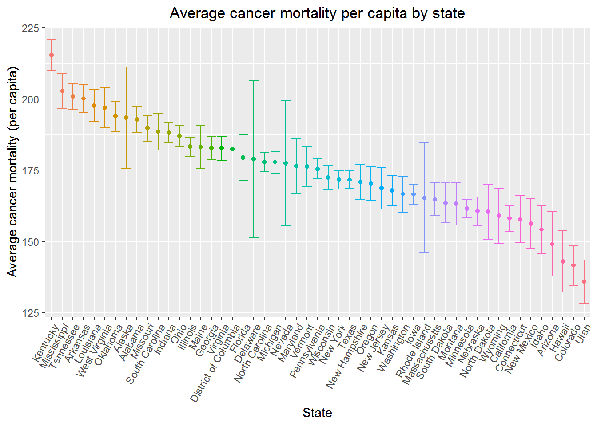
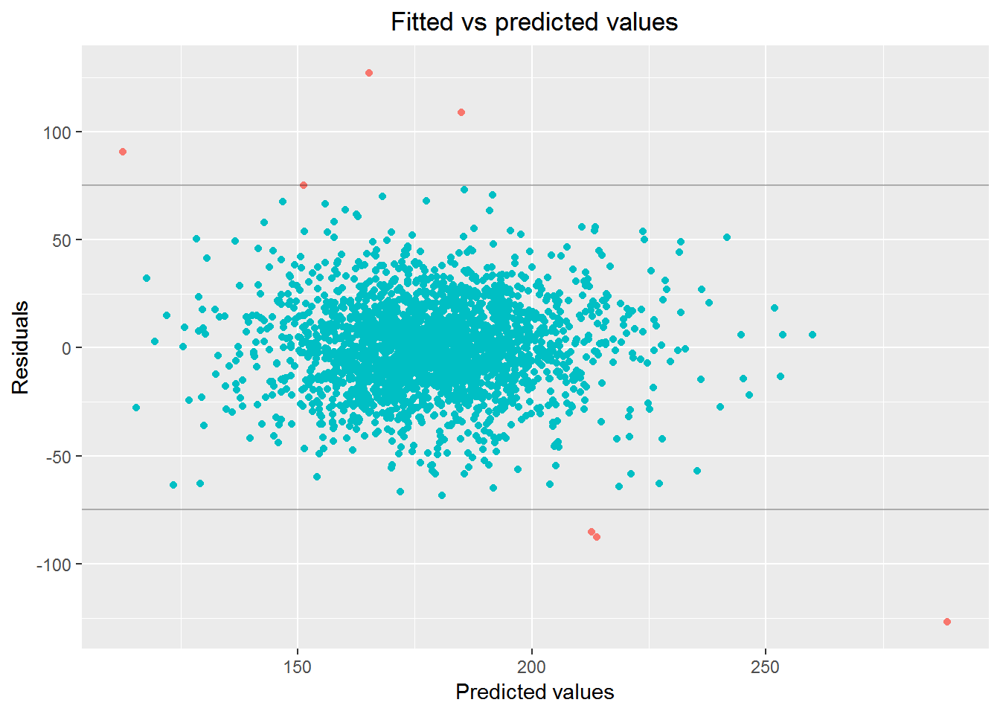
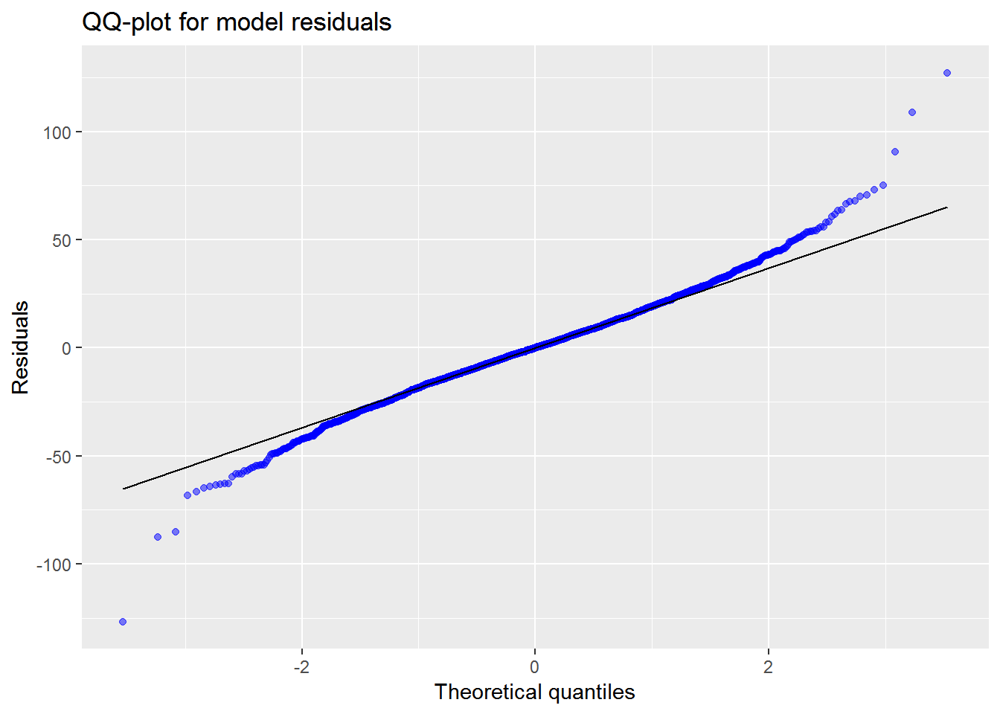

library(glmnet) # LASSO library
library(modelr) # For diagnostics
library(MASS) # For studentized residuals
library(tidyverse) # plotting & analysis
library(caret) # cross-validation
knitr::opts_chunk$set(
fig.align = "center",
out.width = "90%"
)
cancer = read_csv(file = './Cancer_Registry.csv')Our dataset contains 34 columns and 3047 rows and represents a combination of two datasets. Each row represents a county and its related demographic, economic and education figures. Before we perform any modeling, we will clean the dataset and account for any missing values, data typing and formatting issues.
tidy.cancer = cancer %>%
janitor::clean_names() %>%
separate(., geography, into = c("county", "state"), sep = ", ") %>%
separate(., binned_inc, into = c("binned_inc_low", "binned_inc_high"), sep = ", ") %>%
mutate(
inc_dec1 = as.numeric(substr(binned_inc_low, 2, length(binned_inc_low))),
inc_dec2 = as.numeric(str_replace(binned_inc_high, "]", "" )),
id = 1:nrow(.)
)
num_NAs = map_df(tidy.cancer, function(col) return(sum(is.na(col))))
cols_to_remove = which(num_NAs > nrow(cancer) / 10) * -1
tidy.cancer = tidy.cancer[cols_to_remove, ]Create plot for how cancer mortality differs between state.
tidy.cancer %>%
group_by(state) %>%
summarize(count = n(),
mean.mortality = mean(target_death_rate),
std.error = qt(0.975, df = count - 1) * sd(target_death_rate)/sqrt(count) ) %>%
ggplot(data = ., aes(x = reorder(state, -mean.mortality),
y = mean.mortality,
color = reorder(state, -mean.mortality))) +
geom_point() +
geom_errorbar(aes(ymin = mean.mortality - std.error, ymax = mean.mortality + std.error)) +
labs(
title = "Average cancer mortality per capita by state",
x = "State",
y = "Average cancer mortality (per capita)"
) +
theme(
plot.title = element_text(hjust = 0.5),
axis.text.x = element_text(angle = 60, hjust = 1),
legend.position = "none"
)## Warning in qt(0.975, df = count - 1): 产生了NaNs## Warning: Removed 1 rows containing missing values (geom_errorbar).
Narrow down the variables to make code cleaner.
# Narrow down the dataset to just established factors
small.tidy.cancer = tidy.cancer %>%
dplyr::select(
target_death_rate,
incidence_rate, poverty_percent, pct_no_hs18_24, pct_hs18_24,
pct_unemployed16_over, pct_public_coverage_alone, pct_black, id
)Before we fit our final linear regression, we will use LASSO to perform another layer of variable selection. First, we’ll create a model based on our set of literature-reviewed covariates, and then perform cross-validation based on mean squared error to find the optimal \(\lambda\) value for the penalization. We will create our predictive model based on the remaining factors left in the crossvalidated LASSO regression.
set.seed(8150) # Make cross-validation replicable
# Divide data into training set and test dataset (80/20)
train.cancer = sample_frac(small.tidy.cancer, size = 0.8, replace = FALSE)
test.cancer = anti_join(small.tidy.cancer, train.cancer, by = "id")
# Divide datasets into outcome and covariates
train.data = train.cancer %>% dplyr::select(-target_death_rate, -id)
train.outcome = train.cancer %>% dplyr::select(target_death_rate)
test.data = test.cancer %>% dplyr::select(-target_death_rate, -id)
test.outcome = test.cancer %>% dplyr::select(target_death_rate)
# LASSO Cross-validation
lambda.range = 10^(seq(5, -3, length = 1000)) # set of lambdas to crossvalidate over
lasso.CV = cv.glmnet(as.matrix(train.data), as.matrix(train.outcome), lambda = lambda.range)
# LASSO Regressions comparing the lambda.min vs lambda.1se
lasso.min = glmnet(as.matrix(train.data), as.matrix(train.outcome), lambda = lasso.CV$lambda.min)
lasso.1se = glmnet(as.matrix(train.data), as.matrix(train.outcome), lambda = lasso.CV$lambda.1se)We have created two models based off of the LASSO cross-validation, one based off the minimum lambda and another based off a model comparable to the best model in the cross-validation. We’ll compare their coefficients and test MSE below to choose one.
# List the coefficients for each model
coef(lasso.min)## 8 x 1 sparse Matrix of class "dgCMatrix"
## s0
## (Intercept) 26.120467298
## incidence_rate 0.221693192
## poverty_percent 0.967633615
## pct_no_hs18_24 0.009942318
## pct_hs18_24 0.529731387
## pct_unemployed16_over 0.333988019
## pct_public_coverage_alone 0.788385770
## pct_black 0.039939519coef(lasso.1se)## 8 x 1 sparse Matrix of class "dgCMatrix"
## s0
## (Intercept) 50.6001697
## incidence_rate 0.1908378
## poverty_percent 0.8106481
## pct_no_hs18_24 .
## pct_hs18_24 0.3526826
## pct_unemployed16_over 0.1858600
## pct_public_coverage_alone 0.7827868
## pct_black .# Calculate the test MSE for each model
lasso.min.test.preds = predict(lasso.min, s = lasso.CV$lambda.min, newx = as.matrix(test.data))
lasso.min.test.MSE = mean((lasso.min.test.preds - test.outcome$target_death_rate)^2)
lasso.1se.test.preds = predict(lasso.1se, s = lasso.CV$lambda.1se, newx = as.matrix(test.data))
lasso.1se.test.MSE = mean((lasso.1se.test.preds - test.outcome$target_death_rate)^2)The test MSE for the smallest lambda is 442.1, while the test MSE for the lambda comparable to the best model is 449.5. Given that the test MSEs are not significantly different, we will choose the more parsimonious model as the basis for our predictive model.
# Create a formula for the linear regression
final.formula = as.formula(
paste("target_death_rate ~ ",
"incidence_rate + poverty_percent + pct_hs18_24 + pct_unemployed16_over + pct_public_coverage_alone"
)
)
final.model = lm(final.formula, data = train.cancer)
summary(final.model)##
## Call:
## lm(formula = final.formula, data = train.cancer)
##
## Residuals:
## Min 1Q Median 3Q Max
## -126.711 -12.447 -0.129 12.426 127.177
##
## Coefficients:
## Estimate Std. Error t value Pr(>|t|)
## (Intercept) 22.667017 4.012303 5.649 1.80e-08 ***
## incidence_rate 0.226254 0.007947 28.472 < 2e-16 ***
## poverty_percent 1.045297 0.113594 9.202 < 2e-16 ***
## pct_hs18_24 0.547877 0.048532 11.289 < 2e-16 ***
## pct_unemployed16_over 0.401567 0.170504 2.355 0.0186 *
## pct_public_coverage_alone 0.761219 0.122077 6.236 5.29e-10 ***
## ---
## Signif. codes: 0 '***' 0.001 '**' 0.01 '*' 0.05 '.' 0.1 ' ' 1
##
## Residual standard error: 20.76 on 2430 degrees of freedom
## Multiple R-squared: 0.4362, Adjusted R-squared: 0.435
## F-statistic: 376 on 5 and 2430 DF, p-value: < 2.2e-16train.cancer %>%
add_residuals(final.model) %>%
add_predictions(final.model) %>%
ggplot(data = ., aes(x = pred, y = resid, color = ifelse(abs(resid) < 75, "red", "blue"))) +
geom_point() +
geom_hline(yintercept = 75, alpha = 0.3) +
geom_hline(yintercept = -75, alpha = 0.3) +
labs(
title = "Fitted vs predicted values",
x = "Predicted values",
y = "Residuals"
) +
theme(
legend.position = "none",
plot.title = element_text(hjust = 0.5)
)
train.cancer %>%
add_residuals(final.model) %>%
ggplot(data = ., aes(sample = resid)) +
stat_qq(color = "blue", alpha = 0.5) +
stat_qq_line() +
labs(
title = "QQ-plot for model residuals",
x = "Theoretical quantiles",
y = "Residuals"
)
student.resids = studres(final.model)
hats = hatvalues(final.model)
cooks = cooks.distance(final.model)
# Indexes of outliers and influential points
y.outliers = unname(which(student.resids > 2.5))
x.outliers = unname(which(hats > 2 * (length(final.model$coefficients) / nrow(train.data))))
influentials = unname(which(cooks > 1))
outliers = intersect(y.outliers, x.outliers)
outlier.ids = train.cancer[outliers, ]$id
outlier.data = tidy.cancer %>% filter(id %in% outlier.ids)new.train.cancer = train.cancer %>% filter(!(id %in% outliers))
no.outliers.final.model = lm(final.formula, data = new.train.cancer)
summary(no.outliers.final.model)##
## Call:
## lm(formula = final.formula, data = new.train.cancer)
##
## Residuals:
## Min 1Q Median 3Q Max
## -126.828 -12.394 -0.113 12.441 127.189
##
## Coefficients:
## Estimate Std. Error t value Pr(>|t|)
## (Intercept) 22.526319 4.012659 5.614 2.20e-08 ***
## incidence_rate 0.226502 0.007947 28.502 < 2e-16 ***
## poverty_percent 1.045834 0.113593 9.207 < 2e-16 ***
## pct_hs18_24 0.545884 0.048536 11.247 < 2e-16 ***
## pct_unemployed16_over 0.397764 0.170513 2.333 0.0197 *
## pct_public_coverage_alone 0.766654 0.122092 6.279 4.02e-10 ***
## ---
## Signif. codes: 0 '***' 0.001 '**' 0.01 '*' 0.05 '.' 0.1 ' ' 1
##
## Residual standard error: 20.76 on 2427 degrees of freedom
## Multiple R-squared: 0.4369, Adjusted R-squared: 0.4357
## F-statistic: 376.6 on 5 and 2427 DF, p-value: < 2.2e-16train.MSE = sum(final.model$residuals^2) / 2430cor(small.tidy.cancer)## target_death_rate incidence_rate poverty_percent
## target_death_rate 1.00000000 0.449620013 0.429414906
## incidence_rate 0.44962001 1.000000000 0.009150766
## poverty_percent 0.42941491 0.009150766 1.000000000
## pct_no_hs18_24 0.08837688 -0.170388020 0.288058455
## pct_hs18_24 0.26187412 0.023118648 0.094117566
## pct_unemployed16_over 0.37850349 0.100057294 0.655147910
## pct_public_coverage_alone 0.44933531 0.040891516 0.798652736
## pct_black 0.25700621 0.113765086 0.511507096
## id 0.05180713 0.077800740 0.033184435
## pct_no_hs18_24 pct_hs18_24
## target_death_rate 0.08837688 0.261874121
## incidence_rate -0.17038802 0.023118648
## poverty_percent 0.28805845 0.094117566
## pct_no_hs18_24 1.00000000 0.084037672
## pct_hs18_24 0.08403767 1.000000000
## pct_unemployed16_over 0.18117162 0.130726509
## pct_public_coverage_alone 0.32728003 0.234077896
## pct_black 0.11650452 -0.025224960
## id 0.09187952 -0.003997913
## pct_unemployed16_over pct_public_coverage_alone
## target_death_rate 0.37850349 0.449335309
## incidence_rate 0.10005729 0.040891516
## poverty_percent 0.65514791 0.798652736
## pct_no_hs18_24 0.18117162 0.327280029
## pct_hs18_24 0.13072651 0.234077896
## pct_unemployed16_over 1.00000000 0.655409249
## pct_public_coverage_alone 0.65540925 1.000000000
## pct_black 0.46928071 0.330094897
## id -0.01693555 -0.007866027
## pct_black id
## target_death_rate 0.25700621 0.051807134
## incidence_rate 0.11376509 0.077800740
## poverty_percent 0.51150710 0.033184435
## pct_no_hs18_24 0.11650452 0.091879519
## pct_hs18_24 -0.02522496 -0.003997913
## pct_unemployed16_over 0.46928071 -0.016935549
## pct_public_coverage_alone 0.33009490 -0.007866027
## pct_black 1.00000000 0.017655152
## id 0.01765515 1.000000000car::vif(final.model, data = train.cancer)## incidence_rate poverty_percent
## 1.015156 2.964005
## pct_hs18_24 pct_unemployed16_over
## 1.092296 1.913923
## pct_public_coverage_alone
## 3.119085# Use 10-fold cross-validation (10 repeats) and create the training sets
train.settings = trainControl(method = "repeatedcv", number = 10, repeats = 10)
# Fit the final model that we discussed above
cv.model = train(final.formula,
data = tidy.cancer,
trControl = train.settings,
method = 'lm',
na.action = na.pass)
cv.MSE = mean(cv.model$resample$RMSE^2)# Create a formula for the linear regression
log.formula = as.formula(
paste("log(target_death_rate) ~ ",
"incidence_rate + poverty_percent + pct_hs18_24 + pct_unemployed16_over + pct_public_coverage_alone"
)
)
log.model = lm(log.formula, data = train.cancer)
summary(log.model)##
## Call:
## lm(formula = log.formula, data = train.cancer)
##
## Residuals:
## Min 1Q Median 3Q Max
## -0.77005 -0.06450 0.00670 0.07274 0.57769
##
## Coefficients:
## Estimate Std. Error t value Pr(>|t|)
## (Intercept) 4.274e+00 2.331e-02 183.299 < 2e-16 ***
## incidence_rate 1.339e-03 4.618e-05 29.007 < 2e-16 ***
## poverty_percent 5.323e-03 6.601e-04 8.064 1.15e-15 ***
## pct_hs18_24 3.011e-03 2.820e-04 10.678 < 2e-16 ***
## pct_unemployed16_over 2.554e-03 9.908e-04 2.578 0.01 **
## pct_public_coverage_alone 4.375e-03 7.094e-04 6.168 8.08e-10 ***
## ---
## Signif. codes: 0 '***' 0.001 '**' 0.01 '*' 0.05 '.' 0.1 ' ' 1
##
## Residual standard error: 0.1206 on 2430 degrees of freedom
## Multiple R-squared: 0.425, Adjusted R-squared: 0.4238
## F-statistic: 359.2 on 5 and 2430 DF, p-value: < 2.2e-16